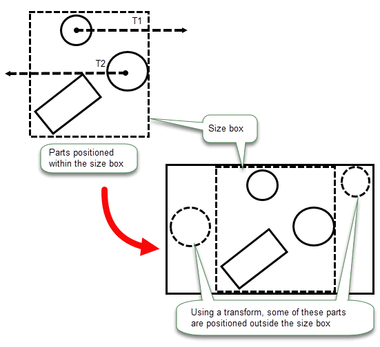
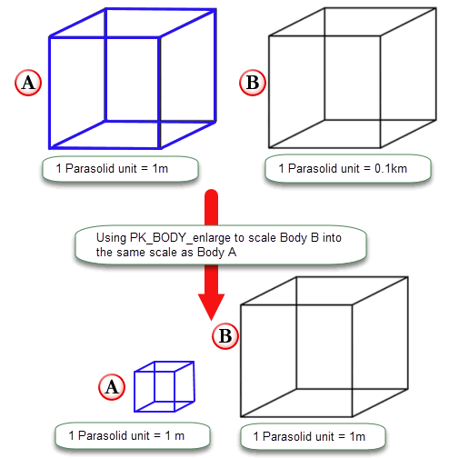

| |
Distant and Multi-scale Modelling |
| <<< Assemblies And Instances | Chapters | Reading and Writing Parasolid Data >>> |
Parasolid supports the representation of, and common workflows involving, assemblies where components are distributed over a range larger than the Parasolid size box. This is done while retaining the same level of linear and angular precision.
Parasolid uses two distinct but complementary mechanisms to enable your application to work with these large scale models:
|
Note: The mechanisms described in this chapter are mainly focused on usage being in an application’s assembly context. |
To ensure precision is handled correctly by Parasolid, your application must ensure that all parts of a body are within a size box. This size box is 1000 by 1000 by 1000 and is centered at the origin. However, this can prove difficult when working with models in an assembly spread over a large distance.
Parasolid provides support for models that individually would fit inside the size box but in an application assembly context may be positioned beyond the size box by being associated with large transformations. Parasolid refers to this as Distant modelling.
A simple example of this is illustrated in Figure 23-1 where transforms (T1 and T2) are applied to two parts within the size box resulting in these parts being positioned beyond the size box.
Figure 23-1 Models in an assembly positioned outside the size box by large transforms
An example workflow is in factory design when deciding where to position objects (such as machinery) around the factory. Each component of the factory is small but the factory itself may extend to a few kilometers in size.
|
Warning: Your application should use Parasolid for any calculations involving the creation or manipulation of large transformations to guarantee retaining a session precision of 1.0e -08. |
The following are Parasolid functional areas and associated functions that support this technology:
|
Calculating distances between transformed arrays of entities |
|
In order to maintain accuracy when working with large transformations Parasolid requires that:
Parasolid provides capabilities for models from different application scales (SI unit mappings) to coexist with each other in the same Parasolid session and interact with each other in typical assembly modelling workflows. Parasolid refers to this as multi-scale modelling.
This mechanism supports assemblies with a mix of part sizes by allowing you to associate a scale factor with each part.
Figure 23-2 Real world example of a multi-scale scenario
Support is provided as follows:
|
Note: Multi-scale modelling assumes that the application has implemented or will implement support for different sized parts (i.e have different mappings of Parasolid units to SI units). |
Some terminology used in this chapter is specific to this concept of multi-scale modelling. This section contains a list and descriptions of these new terms:
To allow models of different scales to interact with each other in read-only operations, Parasolid provides a scale factor (PK_scale_factor_t) which your application can use to inform Parasolid as to:
PK_scale_factor_t has the following values.
|
Note: Scale factors greater than 1000x are not supported. |
An input scale factor indicates the scale at which the input entities was originally modelled.
You can supply one input scale factor per input body (or part). If you have an array of bodies or parts, you can supply one input scale factor for each one in the input array.
|
Note: Represent all input scale factors relative to the smallest scale input as Parasolid does not support scale factors less than 1. |
When supplying input scale factors, they should be collated and expressed in the context of the smallest scale input. For example, if your application inputs smaller and standard parts into an operation, the application should present the inputs in the context of the smaller entities, with these having an input scale factor of 1x and the standard entities having a larger input scale factor, e.g. 1000x.
The results of the operation will be calculated and returned at the smallest input scale provided unless your application has supplied an output scale.
An output scale factor tells Parasolid the scale at which the application wants to interpret the results of the Parasolid operation. By default, results of the operation are returned in the smallest scale used for the input of the operation. However, if your application wants to visualise the results relative to a larger scale supplied in the operation then you need to supply an output scale factor (PK_scale_factor_t), to control the scale at which the results are returned.
For example, you have a set of small and standard bodies in an assembly. By default (i.e no output scale factor is set), the results are returned in the context of the small scale. By supplying an output scale factor, you can specify to return the output results in the context of a standard scale by supplying a larger scale factor e.g.1000x.
|
Note: The use of this output scale factor is optional. Only one output scale factor can be supplied and this will apply to the scale of the results and not the actual bodies. |
These APIs allow an application to support an assembly of parts which are a mix of different scales e.g large and standard parts together in a single assembly.
The supplied scale factors in these operations are read only operations and do not modify the input bodies.
For workflows where you want to modify one or other of the bodies of different scales, Parasolid provides capability via dedicated enlarge APIs that provide targeted support to enable you to bring portions of a body or geometry from a larger scale environment to a smaller scale one.
Enlarge in this context refers to taking a body (or geometry) from a larger scale and representing either a portion of the body or the whole body in the context of a smaller scale, therefore enlarging the portion of the part. For example from a large body to a standard body or a standard body to a small body.
The following is a simple example used to explain the concept of enlarge in this context:
Your application has a standard body where 1 Parasolid unit = 1 m (Body A), and a larger body (Body B) where 1 Parasolid unit = 0.1km and it wants to represent Body B as a standard body so it can interact with Body A in a modelling operation.
To do this, the 3-space values in the Parasolid Body B needs to be enlarged (i.e 1 Parasolid unit in Body B will correspond to 100 Parasolid units in the standard body Body A) so its at the same scale as Body A. This is illustrated in Figure 23-3.
Figure 23-3 An example of PK_BODY_enlarge
The dedicated Parasolid enlarge APIs are as follows:
|
Note: For all functions, the centre of scaling is the origin. |
To ensure precision is maintained, bodies must always fit inside the Parasolid size box in the context of the SI unit mapping of the session they were created in. However, once a body (or geometry) has been enlarged, it may not fit into the size box of the smaller session. If this happens, the part will be trimmed. Both PK_BODY_enlarge and PK_GEOM_enlarge perform trimming either to the Parasolid size box or a user-supplied box using the
have_trimming_box
and
trimming_box
options. Any geometry or topology that lies outside of the box is discarded. This is illustrated in
Figure 23-4.
Figure 23-4 Enlarging geometry and performing model editing operations
For more information on these two functions, see Section 14.9, “Representing models whose parts are of different scales”
Below is a simplistic example of how multi-scaling might work in a bridge design context:
If the supplied body has a system attribute of type SDL/TYSA_SCALE_FACTOR attached and a scale factor is supplied via
factor
argument in PK_BODY_enlarge, then Parasolid will attach a new scale factor attribute to the newly created enlarged body. The value supplied in
factor
can modify the value of the new system attribute as needed to ensure the size of the result body remains unchanged in real-world units. For more information on this scale factor attribute, see Section A.3.13, “Scale factor”.
|
Note: This attribute is for informative purposes only and in general Parasolid will not read from it or write to it. The exception is in PK_BODY_enlarge. |
| <<< Assemblies And Instances | Chapters | Reading and Writing Parasolid Data >>> |